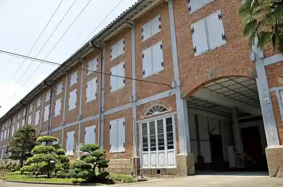
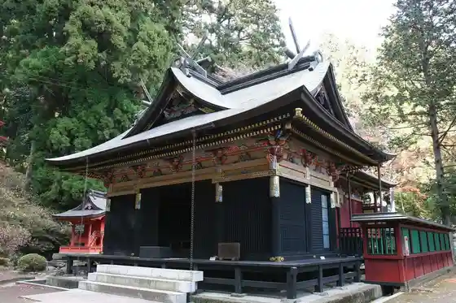
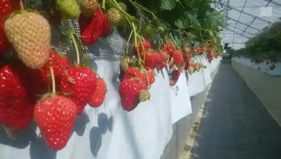
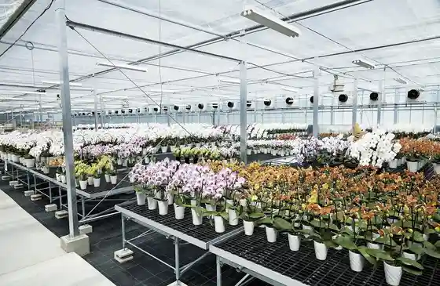

Tomioka Seishi Ba
Tomioka, Gunma · 0274-67-0075 · Official / source link

Myogi Shrine
Tomioka, Gunma · 0274-73-2119 · Official / source link

Takada Ichigo Sono
Tomioka, Gunma · 090-2327-7522 · Official / source link

Marui Yoran Kaihatsu Center
Tomioka, Gunma · 0274-67-0828 · Official / source link

Gunma Prefectural Sekai Isan Center (Sekaito)
Tomioka, Gunma · 0274-67-7821 · Official / source link
Ozawa Ie
Tomioka, Gunma · 0274-62-0341 · Official / source link
Nihonryori Tokiwa So
Tomioka, Gunma · 0274-62-0090 · Official / source link
Oshio Mizumi
Tomioka, Gunma · 0274-62-6001 · Official / source link
Tomioka Tanjo Chiku no Himawari Hatake
Tomioka, Gunma · 0274-62-6001 · Official / source link
Tomioka Shakuyaku Sono
Tomioka, Gunma · 0274-63-0772 · Official / source link
Kami Sei Kodai Hasu Village
Tomioka, Gunma · 0274-62-6001 · Official / source link
Roadside Station
Tomioka, Gunma · 0274-73-3991 · Official / source link
Kazuyuki Miya Nukisaki Shrine
Tomioka, Gunma · 0274-62-2009 · Official / source link
Gunma Prefectural Shizen Shi Museum
Tomioka, Gunma · 0274-60-1200 · Official / source link
Myogi Yama
Tomioka, Gunma · 0274-62-6001 · Official / source link
Myogi Sukai Park
Tomioka, Gunma · 090-3112-2203 · Official / source link
Oshima Kosen
Tomioka, Gunma · 0274-62-1490 · Official / source link
Soba Tokoro Sugi no Ie
Tomioka, Gunma · 0274-62-1734 · Official / source link
Kawara Ya
Tomioka, Gunma · 0274-62-2359 · Official / source link
Tomioka Hokubu Sports Park (Momiji Taira General Park)
Tomioka, Gunma · 0274-62-1511 · Official / source link
Gunma Safari Park
Tomioka, Gunma · 0274-64-2111 · Official / source link
Tomorokoshi Meiro (Myogi no Tsuchi Farm)
Tomioka, Gunma · Official / source link